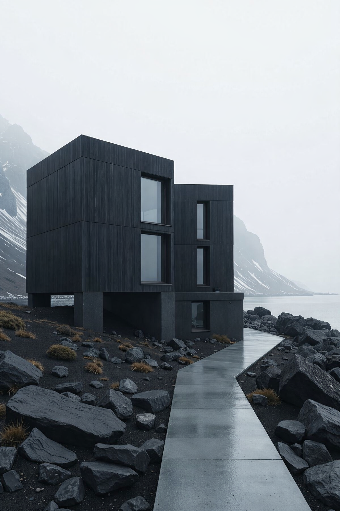

ENSUEÑO
Frente al Pacífico donde la arquitectura contemporánea dialoga con la tradición y los materiales de la región, creando espacios serenos pensados para el descanso y la contemplación.
VER MÁS
RESIDENCIAL MONTE
Proyecto concebido como espacio de contemplación donde el interior y el paisaje se integran en una experiencia arquitectónica continua.
VER MÁS

MINIMAL HOUSE
Espacios definidos por la pureza formal y la honestidad material, generando arquitectura sobria y atemporal.
VER MÁS